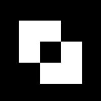
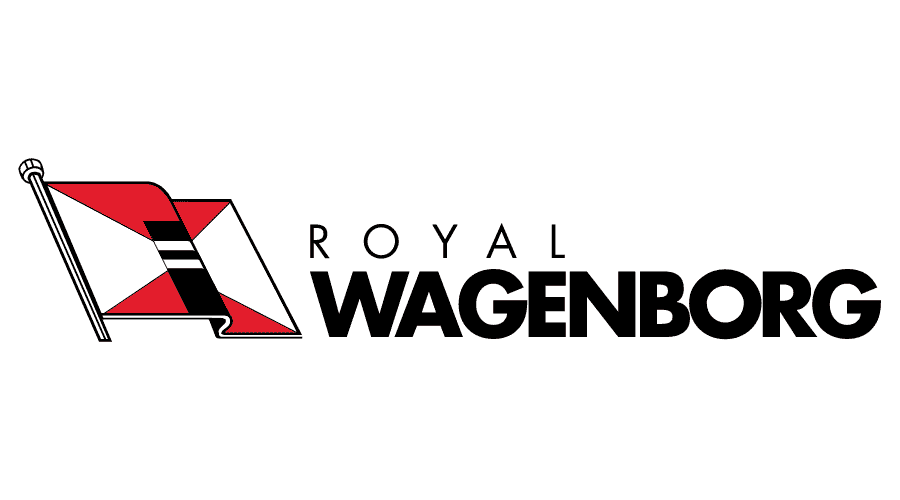

Experience
Jan 2026 — Present NOW
Junior Full Stack Engineer

Cumlaude.AI — Kampen, NL- Data Architecture & Engineering: Designing, implementing and maintaining data warehouse architectures, databases, ETL processes and data models using SQL, Azure Synapse, and Microsoft Fabric.
- AI-driven Data Visualisation: Building automated data processing pipelines and dynamic visual dashboards with AI-driven analytics using Power Automate and Power Apps.
- User Needs & Solution Design: Identifying user requirements and translating them into tailored technical solutions that best fit the client's context.
- IT Infrastructure & Cloud: Applying knowledge of networking, servers, and cloud platforms to manage, analyse, and deliver data effectively.
2022 — 2023
Junior Project Engineer

Royal Wagenborg- New Projects: Led MRV fuel reporting for vessels over 5000GT for the year 2022.
- Hazardous Materials: Introduced protocols for tracking, handling, and disposal of hazardous materials on board ships throughout their life cycle.
- Digital Solutions: Collaborated with leading companies on digitalised tracking solutions and created a framework for in-house tracking software development.
- Environmental Reporting: Developed environmental consumption reports for submission to the IMO.
2021 — 2022
Production Planning Consultant
 S&B Machine Works (Partnership)
S&B Machine Works (Partnership)
- Developed and optimised production schedules for high-precision CNC machining operations, ensuring efficient resource allocation, minimal downtime, and on-time delivery. Implemented process improvements to enhance throughput, reduce lead times, and maintain quality standards.